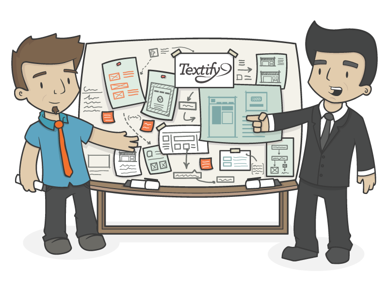

The Sales Leader
- The Sales Leader often has multiple accounts, or multiple teams at one account.
- The Sales Leader is tied into Acme culture and sees herself as a Acme leader.
- The Sales Leader feels responsible for growing her account.
When I come into work every day, my focus is on making sure my account teams are providing great CSD to our clients, and making sure the associates on my accounts have everything they need to be successful. I always have my own CSD to do as well.
I spend time from the beginning of my day on keeping my accounts healthy and finding new opportunities where Acme can help at my accounts. The more time I can spend with my buyers the better. Lunchtime is usually spent checking in with my buyer, another client, or a team member on my accounts. I likely have billable hours to put in, and delivering for the client is crucial, but I am equally focused is on how my account team is delivering.
I make my decisions based on where Acme wants to move as an organization. I pull my Associates into the relationship building process and encourage them to connect with their clients whenever possible. I feel responsible for growing my accounts.
After lunch with my buyer, I take some notes for myself in my excel file - I'm not sure if this lead is going to go, so I don't want to set wrong expectations. My afternoon is spent on CSD. I'll also likely dial into the Acme call, because connecting with my Acme community usually yields dividends.
This evening I need to get a jump start on invoicing. This is a waste of my time, and involves a lot of formatting and scrubbing Word, but fortunately I've delegated some my SL responsibilities to an associate on each of my accounts. My associates help ensure time compliance for the accounts.
As I go to sleep, I look forward to the fact that the SOW for an opportunity at one of my accounts should be signed tomorrow."
The Sales Lead
- The Sales Lead often was the first person on their account and became the SL by default.
- The Sales Lead is primarily delivering at their account, and sees delivering invoices as a key part of their SL activities.
- The Sales Lead may not feel as strongly connected to Acme as the Sales Leader. The Sales Lead prioritizes client relationship building, but may not understand how the greater Acme strategy might relate to their account.
"When I come in to work every day, my focus is about delivering for my client. My work for my client comes first. If the team at my account has questions or needs help, I'm there for them 100%, but otherwise I trust them to accomplish their objectives. Morning is spent on CSD with a few minutes spent on a slide for the next Account Meeting deck. Lunchtime is spent on that PowerPoint for my client's senior leadership related to the Program I am running. The better service I provide for my client, the more likely they will extend work for me or introduce me to a new opportunity at the Account.
I make my decisions based strategically on what will solve my clients problems. I do the required parts of the SL process, including the monthly account meeting, but really I know my team is on the ball. There's a Acme call this afternoon, but I doubt I'll have time to attend. I'd like to be more plugged in with Acme, but I have to make tough priority calls. I'm hoping to make time this afternoon to talk to my buyer about an extension. I wish I had more free time to work on growing my account.
This evening a have to work on invoicing. Yuck! Fortunately I have a smaller account, so fewer moving pieces, but it is really something I'd really like to offload. Nine times out of ten, I run into an error and have to email the ASA team to fix it, which stretches process out over several evenings.
As I go to bed, I look forward to the presentation I have tomorrow with my client's senior management. I've put a lot of work into preparation and the client should be satisfied with the results."